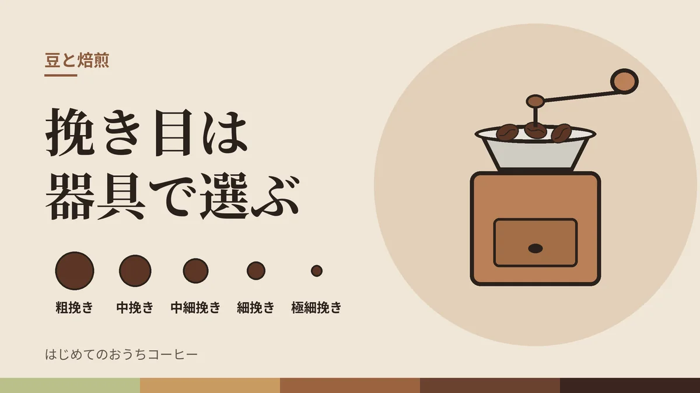

コーヒーの挽き目の違い｜粗挽き・中挽き・中細挽き・細挽きの選び方

結論
コーヒーの挽き目の違いは、豆を挽いたあとの粒の大きさの違いです [1]。粗さの呼び名だけで選ばず、器具と淹れ方が一致する公式レシピの指定から始めましょう。
豆の袋に「中挽き」と「中細挽き」が並ぶと、家のドリッパーに合うほうを選ぶだけでも迷います。アイス用や水出し用なら同じ粉でよいのか、という疑問も出てきます。この記事では、買う前に器具と抽出方法を照合するための表を用意しました。公式資料で確認した目安と、当サイトが提案する注文・記録の方法を分けて説明します。淹れ方全体を覚えるためのレシピではなく、粉選びの入口として使ってください。
粗挽きから極細挽きまで
- 粗挽きザラメ糖ほどの粒 [1][2]パーコレーター。Blue Bottleのフレンチプレスも粗挽き
- 中挽きグラニュー糖とザラメ糖の間 [1][3]サイフォン・ネルドリップ。Blue Bottleの通常のドリップも中挽き
- 中細挽きグラニュー糖ほどの粒 [1]ペーパードリップ・家庭用コーヒーメーカー
- 細挽き上白糖とグラニュー糖の間 [1]ウォータードリップ（水出し）の例
- 極細挽き上白糖ほどの粒 [1]エスプレッソマシン・イブリック
この記事でわかること
- 器具と抽出方法から、買う粉の挽き目を絞り込む
- ドリップの中挽き・中細挽きの指定を、レシピごとに読み分ける
- 店への注文内容とミルの設定を残し、次の購入につなげる
粗挽きから細挽きまで、器具と粉の目安を見比べる
全日本コーヒー協会は、粗挽き、中挽き、中細挽き、細挽き、極細挽きを、粒の大きさによる分類として紹介しています [1]。下表の砂糖での例えは、同協会の説明に沿っています [1]。この表は、ミルの設定番号や粒の寸法を指定するものではありません。
| 挽き目 | 粒の大きさ（砂糖での例え） | 公式資料で確認できる用途 | 買うときの確認（当サイトの提案） |
|---|---|---|---|
| 粗挽き | ザラメ糖ほど [1] | パーコレーター [1]。フレンチプレスはBlue Bottleの指定が粗挽き [2] | プレス用かパーコレーター用かを伝える |
| 中挽き | グラニュー糖とザラメ糖の間 [1] | サイフォン・ネルドリップ [1]。Blue Bottleの通常のドリップも中挽き [3] | 器具名に加え、使うレシピも伝える |
| 中細挽き | グラニュー糖ほど [1] | ペーパードリップ・家庭用コーヒーメーカー [1]。Blue Bottleの氷へ直接抽出する方法も中細挽き [4] | ホット用か、氷へ落とす急冷式かを添える |
| 細挽き | 上白糖とグラニュー糖の間 [1] | ウォータードリップ（水出し）の例 [1] | 水出し器具の型と指定粒度を確認する |
| 極細挽き（補足） | 上白糖ほどの細かさ [1] | エスプレッソマシン・イブリック [1] | 細挽きと同じ注文にせず、機種と取扱説明書の指定を示す |
用途は出典にある組み合わせの例です。たとえば「ドリップ」とだけ書いた袋を選ぶときは、この表の呼び名だけで決めず、販売店の用途表示と使う器具の指定を照らし合わせてください。当サイトでは、器具の型名がわからない場合、ドリッパーやフィルターの写真を用意する方法を提案します。店側に器具を伝えたうえで、その店のどの粗さが対応するかを聞くためです。
「豆のまま」と「粉」の選択も、注文する前に決めておきましょう。自宅で挽くなら器具向けの設定を確認し、店で挽いてもらうなら用途を伝えます。粗さの注文と豆の銘柄選びは別の欄に書くと、次の購入で何を変えたいか整理できます。
動画で見る：粗挽きから極細挽きまで
ドリップの中挽きと中細挽きは、レシピをセットで選ぶ
Blue Bottle Coffeeの通常のドリップガイドは、中挽き（Medium）を指定しています [3]。同ガイドは、その粗さを安定した湯の流れと均一な抽出のための条件として説明しています [3]。一方、氷を入れた容器へ直接抽出するHot Over Iceでは、中細挽き（Medium-fine）を使い、通常のドリップより少し細かくすると明記しています [4]。
UCCの一般的な挽き方の案内では、ペーパードリップとコーヒーメーカー向けは中細挽きです [5]。同社は、すでに挽いてある市販のレギュラーコーヒーは、この中細挽きに設定されていることが多いようだとも述べています [5]。このため、本記事では「ドリップには中挽きだけが合う」とも「中細挽きだけが合う」とも案内しません。資料が対象にしている器具・方法・レシピを確認し、使う手順の指定を採用する読み方をとります。
同じドリッパーでも、ホットと急冷式を区別する
Blue Bottleの比較から確認できるのは、同社の通常のドリップとHot Over Iceで指定が違うことです [3][4]。「アイスはすべて細かくする」という規則には広げず、このレシピを使うときの選び方として扱います。水出しや、抽出後に冷蔵する方法まで同じ指定だとは考えないでください。
注文前に書くメモ（当サイトの提案）
淹れ方：お湯で淹れる通常のペーパードリップ
器具：自宅のドリッパーの型名とペーパーの種類
使う手順：器具の説明書、または公式ガイドのURL
相談したいこと：この手順に合う店の挽き目を知りたい
すでに気に入った粉があるなら、袋の表示と器具の組み合わせを現在の基準として残します。別の公式ガイドに違う粗さが書いてあっても、呼び名だけを取り替える必要はありません。新しい手順を試すのか、今の手順のまま粗さだけ比べるのかを先に決めると、比較の目的を保てます。
フレンチプレス・水出し・エスプレッソを同じ粉で考えない
フレンチプレスは、採用したガイドの粗挽きから
Blue Bottleのフレンチプレスガイドは、海塩に例えた粗く均一な粒を指定しています [2]。粉が湯に浸かる抽出で、細かすぎると抽出が速く進んで苦味が出る、という説明です [2]。押し下げに強い抵抗があれば細かすぎる可能性、軽く急に沈むなら粗すぎる可能性も同ガイドの手がかりです [2]。
この手応えはフレンチプレスでの観察として扱い、ドリップの粉選びには使いません。粉と湯の分量や押し方まで知りたいときは、フレンチプレスの淹れ方を確認してください。ここでは、プレス用として注文し、購入した粉と器具の組み合わせを残すところに絞ります。
水出しは、器具と抽出方法まで伝える
UCCは細挽きの用途例にウォータードリップを挙げています [5]。ただし、この例だけで、浸け置きする容器やバッグを含めた水出し全体の指定にはできません。「水出し用」とだけ注文する前に、手元の器具がどの方法で抽出するか、粉の指定が説明書にあるかを確かめておきましょう。
細挽きと極細挽きを混同しない
UCCの分類では、エスプレッソマシン向けは細挽きではなく極細挽きとして紹介されています [5]。家庭の機種で使う粉は、取扱説明書の指定を確認して選んでください。店頭の「細挽き」という表示だけで、そのまま手持ちのマシンに使えるとは判断しないようにしましょう。注文時には機種名を添えて、店に用途を伝えてください。
味を変えたいときは、挽き目だけを比べる記録を作る
UCCは、粒が細かくなると湯との接触面が増えて抽出効率が高まり、濃いめの味わいに、粗くなると軽めの味わいになると説明しています [5]。同時に、使う器具の仕様に合わせることを先に挙げています [5]。味が薄いからといって、器具の指定を外れて細かくする方針にはしないでください。
以下は当サイトの比較手順です。豆や淹れ方をそろえて挽き目だけを動かし、感じた味を記録します。原因を確定するための診断表ではなく、次の設定を考えるためのメモとして使います。量や湯の温め方も同時に変えた場合は、挽き目だけの差として結論を出さないようにします。
| 比べたいこと | 比較前にそろえるもの | 次に残すメモ（当サイトの提案） |
|---|---|---|
| 味が軽く物足りない | 同じ豆・器具・粉量と湯量・湯の温め方 | 指定範囲の細かい側と比べ、厚みや後味の変化を書く |
| 苦味が強く感じられる | 同じレシピと抽出後の扱い | 指定範囲の粗い側を候補にし、苦味の残り方を書く |
| 前の設定へ戻したい | ミル名・設定位置・使った豆の記録 | 変更前と変更後を併記し、普段用に残す位置を選ぶ |
フレンチプレスでは、Blue Bottleがぬるい湯による平板な味や抽出不足、抽出後に容器へ移さず置くことによる苦味にも言及しています [2]。苦い・物足りないという感想が出たら、挽き目を原因と決める前に、粉以外に変えた条件がないかを振り返ってください。
記録する感想は「抽出に失敗した」より、「後味の苦味が残った」「軽い口当たりを好んだ」のように、飲んで感じたことにします。好みの味ならその位置を普段用として残し、判断がつかなければ元へ戻して比較を終えてかまいません。注ぎ方やフィルターの調整まで扱う場合は、ハンドドリップの味の調整へ進んでください。
豆を買う前に、店への注文とミルの設定を用意する
当サイトでは、注文時に「器具名」「淹れ方」「参照する手順」をセットで伝える方法を提案します。粗さの名前だけを指定するより、自宅でどう使う粉かを店側に説明するためです。店に挽き目の段階があれば、案内された呼び名や番号を控え、次も同じ店で頼むときの手がかりにしてください。
- ホットのドリップ用：器具とペーパーを示し、使う公式手順に対応する挽き目を相談する。
- 急冷式にする場合：氷へ直接落とすレシピであることを添え、ホット用の注文と区別する。
- 水出し用：器具の型名と説明書を見せ、点滴式か浸け置き式かまで確認する。
自宅のミルでは、「中挽き」とだけ書かず、器具名と設定位置を記録します。数字のない調整部なら位置を写真に残す方法もあります。操作や調整はミルの説明書に従ってください。別のミルに買い替える場合は、以前の番号を新しい機種にも使える目盛りとして扱わず、その機種の案内から基準を置き直しましょう。
粉を買う人は、その場で粒度を比べるための追加購入を急ぐ必要はありません。まず購入時の表示を控えて今の粉を使い、次の注文でどこを変えたいかを書き添えておけば足ります。豆と粉の保存や購入量の考え方は、コーヒー豆と粉の保存方法で扱っているため、この記事では保存期間を重ねて案内しません。
購入前のメモに空欄が残る場合は、粗さの名前を決め打ちせず、器具の説明書や販売店への確認を先に済ませます。普段使う器具の情報がそろえば、比較表を見返すときにも用途を絞れます。公式ガイドは特定ブランドの商品を選ぶためではなく、粉の指定と適用条件を確認する資料として利用してください。
挽きムラ・微粉・挽くタイミングで、挽き目の差を見誤らない
全日本コーヒー協会は挽き方のポイントとして、粒の大きさをそろえること、微粉末をできるだけ少なくすること、挽くときの摩擦熱を抑えることを挙げています [1]。挽きムラがあると湯が粉に均等に入り込まず、抽出の濃さにムラが出るという説明です [1]。微粉末は過剰抽出の原因になりがちだともしています [1]。
UCCは、家庭用ミルではある程度粒のばらつきが出るとしています [5]。そのうえで、電動式なら振ったり挽く時間を調整したり、手動式ならハンドルを回すリズムを一定にしたりする工夫を紹介しています [5]。微粉末を茶こしで取り除いてから抽出する方法にも触れています [5]。挽き目を変えて比べる日は、ミルの使い方も前回とそろえておきましょう。
挽くタイミングについて、両資料はどちらも、粉にすると表面積が増えて湿気を吸いやすくなり、風味が損なわれやすいと説明しています [1][5]。そのため、淹れる直前に必要な分だけ挽くことを勧めています [1][5]。挽いた粉を置いておく期間や保存場所は、保存方法の記事で確認してください。
ミルの手入れについて、UCCは、刃に残った微粉末をブラシなどで取り除き、付いた油分を乾いた布でふき取るよう案内しています [5]。残った粉が次に挽く粉に混ざると、風味を損なう原因になるという説明です [5]。同じミルでコーヒー以外のものを挽かないことにも触れています [5]。
UCCによると、挽き方が器具と合っていないと、成分が十分に抽出されずに薄い味になったり、抽出されすぎて苦味が強くなったりする場合があります [5]。挽き目を調整する前に、器具に合う段階から外れていないかを見直してください。なお、ミルの刃の方式による粒のそろい方の違いは、今回確認した資料では比較されていないため、この記事では扱いません。
チェックリスト
- 器具の型名とフィルターの種類を確認した
- ホット・急冷式・水出しのどれで使うかを決めた
- 使う説明書や公式レシピの挽き目を確認した
- 店には器具と淹れ方を伝えるメモを用意した
- ミルの変更前の設定を記録した
- 比較する日は豆と分量、湯の扱いをそろえる
- 保存を確認したい場合は関連記事を見る
よくある質問
ペーパードリップは中挽きと中細挽きのどちらですか？
Blue Bottleの通常のドリップガイドは中挽き、UCCの一般案内は中細挽きです。どちらかに決め打ちせず、使う器具の説明書や採用する公式レシピの指定に合わせて選んでください。店で頼むなら、ドリッパーと手順を伝えて相談しましょう。
ホット用とアイス用で挽き目を変えますか？
Blue Bottleは通常のドリップを中挽き、氷へ直接抽出するHot Over Iceを中細挽きに指定しています。これは同社のレシピの比較です。アイスという飲み方だけで決めず、どの抽出方法を使うかを確認しましょう。
水出しコーヒーなら細挽きを買えばよいですか？
細挽きはUCCがウォータードリップの用途例として挙げています。浸け置き式などにそのまま広げず、手元の器具の説明書にある粉の指定を優先してください。
細挽きはエスプレッソにも使えますか？
全日本コーヒー協会の分類は細挽きと極細挽きを分け、エスプレッソマシン向けを極細挽きとしています。注文時はマシンの機種と説明書の指定を示し、店の表示で対応する粉を確認しましょう。
ミルの目盛りは何番を中挽きにすればよいですか？
この記事では機種をまたいだ共通番号を示していません。使うミルの説明書から用途別の設定を確認し、器具・豆・設定位置を組にして記録しておきましょう。店の番号も、自宅のミルへの換算値としては使わないでください。
次の一歩
使っている器具の写真か型名を用意し、ホット・急冷式・水出しのどれに使うかをメモしてください。その情報と公式レシピの指定を照合してから、粉の用途表示を選ぶか、店に挽き目を相談しましょう。
出典・参考にした情報
- [1] 全日本コーヒー協会｜焙煎・配合・粉砕
- [2] Blue Bottle Coffee｜French Press Brew Guide
- [3] Blue Bottle Coffee｜Pour Over Coffee Guide
- [4] Blue Bottle Coffee｜Hot Over Ice Brew Guide
- [5] UCC上島珈琲｜コーヒー豆の挽き方
確認日：2026年11月27日（出典ページを自動で取得し、本文と照合）。情報は変わることがあるため、最新の内容は各出典で確認してください。